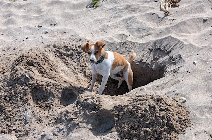
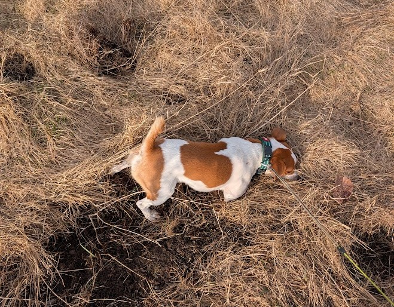
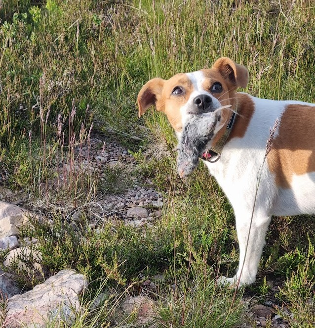

Skadedjursbekämpning i Västra Götaland
Råttor på tomten? Vi tar hand om dem.
Med hjälp av en arbetshund söker vi upp och fångar råttor, möss och sorkar. En enkel metod med ett tydligt villkor: No Kill No Pay.
Kontakta Ratdog50 kr per fångad gnagare · Ingen fångst, ingen arbetskostnad

En annan väg till bekämpning
Hundens nos gör jobbet.
Råttor, möss och sorkar håller sig ofta undan. De rör sig i håligheter, under byggnader och i tät vegetation där de kan vara svåra att hitta.
RATDOG använder en tränad arbetshund för att söka efter och fånga gnagare. Hundens luktsinne hjälper oss att lokalisera var de håller till.
Vi arbetar i Västra Götaland och hjälper privatpersoner, fastighetsägare och gårdar med problem kring byggnader och tomter.

Så arbetar vi
Från första kontakt till sök.
Inga komplicerade upplägg. Vi börjar med att ta reda på var problemet finns och om hunden kan hjälpa till.
Berätta om problemet
Beskriv var du har sett gnagare eller tecken på aktivitet. Vi går igenom förutsättningarna.
Hunden söker
På plats använder vi hundens luktsinne för att söka efter gnagare i området.
Betala för resultatet
Du betalar 50 kronor per fångad gnagare. Fångar hunden ingenting betalar du ingenting för arbetet.

Råttor, möss och sorkar
När gnagarna blir ett problem.
Gnagare kan förekomma runt husgrunder, garage, uthus, gårdar och trädgårdar. Ibland märks de genom spillning, gångar i marken eller ljud från byggnader.
RATDOG arbetar med att lokalisera och fånga råttor, möss och sorkar med hjälp av hund. Metoden gör det möjligt att arbeta riktat utan att förlita sig på gift som fångstmetod.
Beskriv ditt problemVår prismodell
No Kill. No Pay.
Om hunden inte fångar någon gnagare betalar du ingenting för arbetet.
Samma pris för råttor, möss och sorkar.
Enkelt och tydligt.
Du betalar för de gnagare hunden faktiskt fångar. Blir det ingen fångst kostar arbetet ingenting.
Kontakta oss och berätta om ditt problem så kan vi diskutera förutsättningarna.
Skicka en förfråganBra att veta
Vanliga frågor.
Vad kostar RATDOG?
Priset är 50 kronor per fångad gnagare. Om hunden inte fångar någon gnagare betalar du ingenting för arbetet.
Vilka skadedjur arbetar ni med?
Vi arbetar framför allt med råttor, möss och sorkar.
Var erbjuder ni tjänsten?
RATDOG arbetar i Västra Götaland.
Använder ni råttgift?
Vår metod bygger på att en tränad arbetshund söker efter och fångar gnagare, inte på att lägga ut råttgift.
Vad betyder No Kill No Pay?
Det betyder att du inte betalar för arbetet om hunden inte fångar någon gnagare.
Misstänker du råttor på tomten?
Berätta var problemet finns. Vi återkommer och pratar om hur vi kan hjälpa dig.
Kontakta ossKontakta Ratdog
Berätta vad du behöver hjälp med.
Fyll i formuläret och beskriv problemet. Vi återkommer så snart vi kan.
Verksamhetsområde: Västra Götaland.